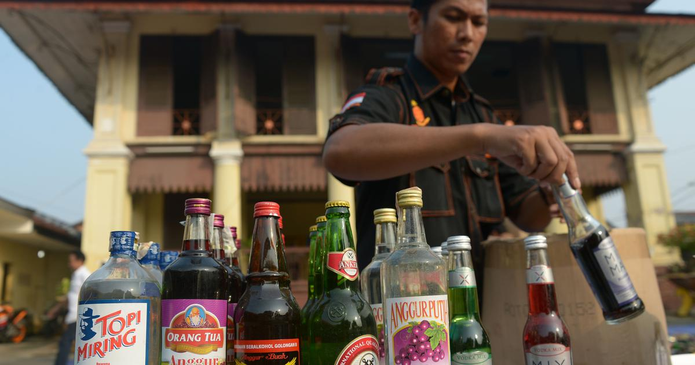

---------------------------------------------------------


Indonesia’s attempt to ban alcohol may cause more problems than it solves
Video: Should drinking alcohol be a crime in Indonesia ?
From Asian Boss
link: https://www.youtube.com/watch?v=O46xRB0Xktk
Members of the Indonesian parliament have just proposed an alcohol prohibition bill, setting off a public debate.
This bill would criminalise the producers, distributors, sellers, buyers and consumers of alcoholic beverages. Violators would be sentenced to fines and prison time.
The parliament’s policy paper claims the bill aims to protect individual life and public order. But it is difficult to separate it from religious justification.
The majority of the bill’s sponsors are Islamic parties, such as the United Development Party and the Prosperous Justice Party, with a total of 69 seats (12.7%) in the parliament. They argue that alcohol should be prohibited because Islam forbids it.
Representatives from the Indonesian Ulema Council (Majelis Ulama Indonesia), Indonesia’s top Muslim clerical body, backs this bill, saying a large majority of Indonesians (87%) are Muslim).
Based on other countries’ experiences, I argue the arguments for this bill are weak.
The implementation of this bill will not be practical nor realistic, especially considering the limitations of Indonesian law enforcement agencies and prison capacity.

Views on prohibition in Islam
Indonesia, the world’s largest Muslim population with around 209 million adherents, has repeatedly tried to ban alcohol.
Members of parliament proposed similar bills in 2009 and 2014, but none has been passed.
Now, some Islamic parties have proposed this bill once again with a religious narrative: to enforce Islamic values.
Historically, alcohol prohibition and its punishment are not a uniform policy in Islam and Muslim-majority countries.
Alcohol prohibition and related punishments are varied and have been among the most debated topics since Prophet Muhammad’s day. During this time, three gradual stages of khamr (alcohol from grapes) prohibition were mentioned in the Koran.
First, it was not prohibited, but avoiding it was encouraged. Second, alcohol intoxication was prohibited. Third was total prohibition of alcohol.
After his death, some Islamic scholars (ulema) and leaders differed over-regulating alcohol prohibition.
They had disagreements over what was considered khamr – whether it is only wine or other alcoholic beverages and drugs – the intoxicated condition and the standard of proof to punish alcohol drinkers.
Ahmad Bin Hanbal, Muslim jurist and founder of the Hanbali jurisprudence, agreed on a total prohibition of consuming intoxicating substances, either alcohol or drug, no matter how much is consumed.
In the 20th century, there was a debate on alcohol prohibition in Islam.
Twentieth-century Muslim scholars refused the previous Muslim scholars’ agreement (ijma) that alcohol should be totally prohibited and subject to uniform state-imposed punishment (Hudud).
They said Hudud can only be imposed if the Koran specifically mentioned the punishment, and Prophet Muhammad did not strictly treat alcohol drinking as a Hudud offence.
One scholar who agreed with this view is Islamic law professor Mohammad Hashim Kamali at Islamic International University in Malaysia – Indonesia’s neighbour with a 60% Muslim majority.
Kamali argued that drinking alcohol is a taʿzīr offence, so prohibition and punishment depend heavily on individual circumstances, social conditions, and government or judicial discretion.
This variety of scholarly arguments and regulations created a state of non-uniformity in prohibiting alcohol among the 50 Muslim-majority countries.
Only five – Afghanistan, Libya, Saudi Arabia, Somalia and Sudan – prohibit alcohol.
Ten countries – Brunei Darussalam, Comoro, Iran, Kuwait, Maldives, Mauritania, Pakistan, Palestine, Syria and Yemen – prohibit alcohol for Muslim citizens only.
The majority of Muslim-majority countries do not prohibit and only restrict or regulate alcohol production, distribution and consumption.
Economic reasons and the presence of non-Muslim citizens and immigrants are the reasons some of these countries do not totally prohibit alcohol.